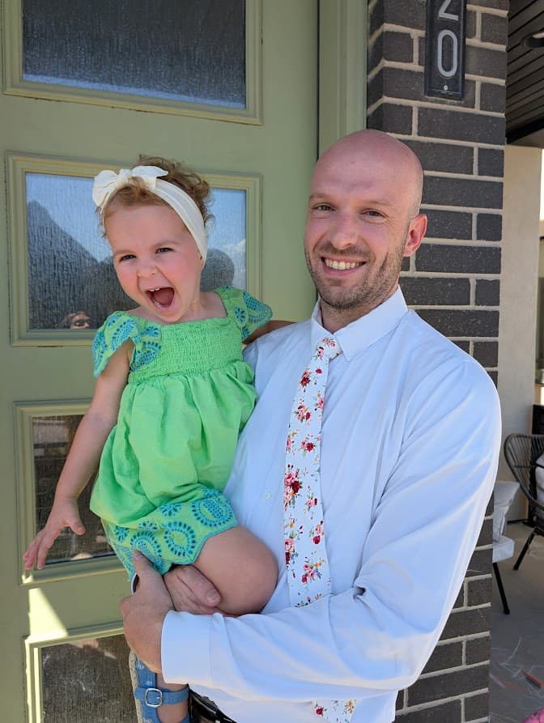

Alex Bridge
Heading
After a fulfilling seven-year career in the fast-paced world of mortgage capital markets, I've embarked on a new professional and educational adventure, pivoting to my passion in tech. This transition has been an exciting journey of growth and learning. On a personal note, though I've been looking for work for a little while now, my life is wonderfully busy with my two-year-old daughter, who keeps me on my toes, and I'm looking forward to celebrating my sixth wedding anniversary with my wife this year. It's a life full of exciting changes, both professionally and personally, and I wouldn't have it any other way.
Heading 2

Content description of image haven't decided yet.